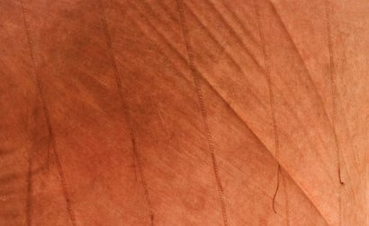

Association Tri Martolod
Restauration et utilisation d'anciens bateaux de travail en bois
Sans noeuds et sans bois fourchu,
Il y aurait plus de charpentiers.
(prov. bretagne)
à la une :
{% for tag in site.iterable.tags %}
{% if tag.name == 'accueil' %}
{% for post in tag.posts %}
- {{ post.date | date: "%d %b %Y " }}❧ {{ post.title }}
{% endfor %}
{% endif %}
{% endfor %}
les 7 derniers articles sur {{ site.posts | size }} ...
{% for post in site.posts limit: 7 %}
- {{ post.date | date: "%d %b %Y " }} ❧ {{ post.title }}
{% endfor %}
